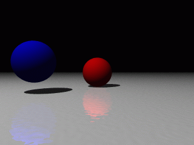

Formation POV #2: 1ère scène
28 avril 2000

Source
#include "colors.inc"
sphere {<0,0,0>,1 pigment {Red}}
sphere {<-3,.5,-3>,1 pigment {Blue}}
plane {y,-1
pigment {White}
finish {reflection .4}
normal {bozo .02 scale .1}}
light_source {<-6,12,-10>, White}
camera {
location -10*z
look_at 0}
Explications
#include "colors.inc"
Inclut le fichiercolors.inc, qui contient des définitions de couleurs utilisées par la suite.sphere {<0,0,0>,1 pigment {Red}}
Crée une sphère, de centre de coordonnées <0,0,0>, de rayon 1, et de couleur rouge.sphere {<-3,.5,-3>,1 pigment {Blue}}
Crée une sphère en <-3,0.5,-3>, de rayon 1, et de couleur bleue.plane {y,-1
Crée un plan de vecteur normal y=<0,1,0> (x et z sont définis de même), et d’altitude -1 le long de l’axe de vecteur directeur y passant par O.pigment {White}
Donne à ce plan une couleur blanche.finish {reflection .4}
Commepigmentcorrespond à la couleur,finishcorrespond aux propriétés lumineuses. Ici on fixe le coefficient de réflexion à 40%.normal {bozo .02 scale .1}}
Enfinnormaldécrit le relief de la surface : bozo est un motif, .02 décrit l’altitude du relief etscale .1divise par 10 la taille du motif.light_source {<-6,12,-10>, White}
Crée en <-6,12,-10> une source lumineuse de couleur blanche.camera {
location -10*z
look_at 0}
Place l’appareil-photo en <0,0,-10> et le fait pointer en <0,0,0>.